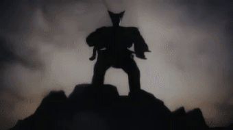
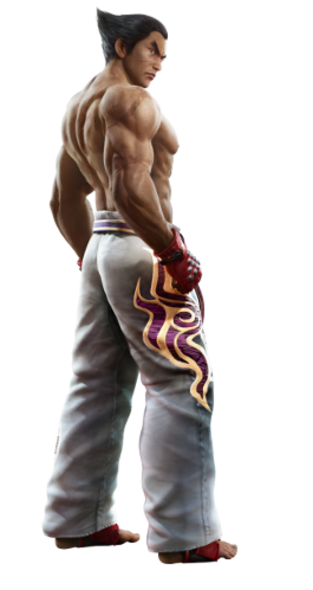

Haihechi Mishima is a strong man from a great army leader. He married a women named Kuzami. They have a children named Kuyaza. Later Haihechi found out his wife is a devil and eventually he fights and killed her. Believing his son shares the same devil genes as his mother, he took Kuyaza to the top of the cliff and tell him that he killed his mother.

Hearing his father betrayal, Kuyaza fights him. Since he was still a little kid, Haihechi easily defeats Kuyaza and attempts to kill him by throwing him off the cliff.
